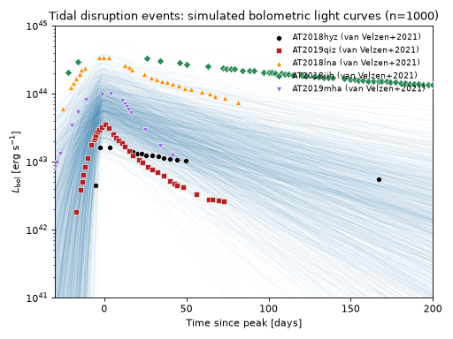
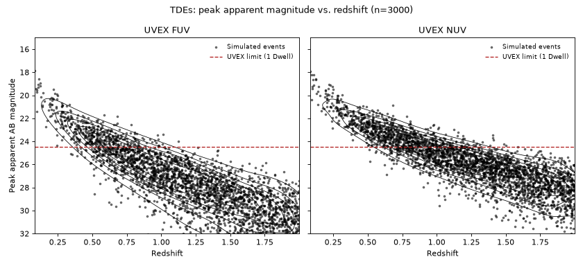
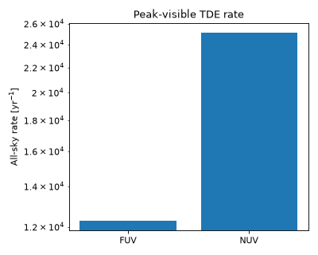

Tidal Disruption Events#
A tidal disruption event (TDE) occurs when a star passes close enough to a (typically super-massive) black hole that the hole’s tidal field exceeds the star’s self-gravity, unbinding and disrupting it; roughly half of the stellar debris remains bound and eventually falls back onto the black hole, powering a luminous, months-long flare. Optically/UV-selected TDEs, the class UVEX is sensitive to, are observed to radiate as blue, roughly constant-temperature thermal sources with characteristic blackbody temperatures of a few \(\times10^4\) K [1], and this SED’s default priors are built from the empirical rise/decline/temperature statistics of that work’s homogeneously-analyzed sample of 39 optical/UV TDEs.
This population is implemented by TidalDisruptionEvent,
pairing VanVelzenTDESED with the rate/duration
metadata described below.
Quick Facts#
Quantity |
Value |
Source |
Notes |
|---|---|---|---|
Rate |
\(3.1\times10^{-7}\ \mathrm{Mpc^{-3}\,yr^{-1}}\) (constant in \(z\)) |
Yao et al.[2] |
Maximum-volume-corrected demographic rate from 33 spectroscopically-confirmed TDEs from three years of the Zwicky Transient Facility. Taken as constant in \(z\), since its evolution remains actively debated – Karmen et al.[3] show the observed redshift-dependent TDE rate is highly sensitive to the poorly-constrained evolution of the supermassive black hole mass function itself. |
Redshift limit |
\(z = 2\) |
– |
Generous relative to the timescales and luminosities of the observed optical/UV TDE population. |
Duration |
200 days |
– |
Generous relative to the timescales and luminosities of the observed optical/UV TDE population. |
SED Model#
There are two TDE SED models which are available:
VanVelzenTDESEDimplements the Gaussian-rise/exponential-decline parameterization of van Velzen et al.[1], with a constant-temperature blackbody photosphere. This is the simplest model that reproduces the observed optical/UV TDE population.AlushStoneTDESEDimplements a more complex model that includes a late-time component, representing a magnetized accretion disk.
By default, the transient class TidalDisruptionEvent
uses the former, simpler model, a constant-temperature blackbody modulated by a Gaussian-rise,
exponential-decay light curve:
with \(t_\mathrm{peak}=5\sigma\). This is the simplest model that reproduces the observed optical/UV TDE population and is sufficient for most population-level UVEX forecasting, where the late-time disk plateau discussed below is faint and rarely detected.
Parameter |
Symbol |
Prior |
Notes / Source |
|---|---|---|---|
|
\(L_0\) |
LogNormal(\(\log_{10}(L_0/\mathrm{erg\,s^{-1}})\); mean=43.8, \(\sigma\)=0.3) |
Peak bolometric luminosity, \(L_0=L_\mathrm{bol}(t_\mathrm{peak})\) [1]. |
|
\(T\) |
LogNormal(\(\log_{10}(T/\mathrm{K})\); mean=4.3, \(\sigma\)=0.1) |
Photospheric temperature, \(\approx2\times10^4\) K [1]. |
|
\(\sigma\) |
LogNormal(\(\log_{10}(\sigma/\mathrm{d})\); mean=1.3, \(\sigma\)=0.3) |
Gaussian width of the pre-peak rise [1]. |
|
\(\tau\) |
LogNormal(\(\log_{10}(\tau/\mathrm{d})\); mean=2, \(\sigma\)=0.2) |
Exponential decline timescale after peak [1]. |
Plateau visibility: AlushStoneTDESED#
AlushStoneTDESED should be used instead of the
default model whenever a study specifically cares about the visibility of the late-time disk
plateau (e.g. forecasting how often UVEX would detect the plateau itself, or how it biases
late-time photometry), rather than population-level early-time behavior. It adds a second,
separately-normalized blackbody component on top of the same early-time photosphere used by
VanVelzenTDESED, one that smoothly softens from a
flat plateau to a power-law decline:
where \(S(\nu, T)\) is the normalized blackbody shape and \(t_\mathrm{peak}=5\sigma\) is the early component’s own peak time. The two components are summed in linear luminosity space, not switched between, since a real disk plateau does not sharply replace the fading early-time emission. The plateau’s functional form and its default decline index, \(\alpha_\mathrm{p}\sim5/6\), follow the magnetized-disk model of Alush and Stone[4], which predicts an \(L_\mathrm{UV}\propto t^{-5/6}\) late-time decline persisting for decades to centuries.
Parameter |
Symbol |
Prior |
Notes / Source |
|---|---|---|---|
|
\(L_0\) |
LogNormal(\(\log_{10}(L_0/\mathrm{erg\,s^{-1}})\); mean=43.8, \(\sigma\)=0.3) |
Early-time peak bolometric luminosity [1]. |
|
\(T\) |
LogNormal(\(\log_{10}(T/\mathrm{K})\); mean=4.3, \(\sigma\)=0.1) |
Early-time photospheric temperature, \(\approx2\times10^4\) K [1]. |
|
\(\sigma\) |
LogNormal(\(\log_{10}(\sigma/\mathrm{d})\); mean=0.91, \(\sigma\)=0.2) |
Gaussian width of the pre-peak rise [1]. |
|
\(\tau\) |
LogNormal(\(\log_{10}(\tau/\mathrm{d})\); mean=1.8, \(\sigma\)=0.2) |
Exponential decline timescale after peak [1]. |
|
\(T_\mathrm{p}\) |
LogNormal(\(\log_{10}(T_\mathrm{p}/\mathrm{K})\); mean=4.0, \(\sigma\)=0.3) |
Late-time disk-plateau blackbody temperature; fiducial scale, not yet calibrated. |
|
\(L_\mathrm{p}\) |
LogNormal(\(\log_{10}(L_\mathrm{p}/\mathrm{erg\,s^{-1}})\); mean=41.5, \(\sigma\)=0.2) |
Plateau bolometric luminosity at \(t_\mathrm{peak}\); fiducial scale, not yet calibrated. |
|
\(\tau_\mathrm{p}\) |
LogNormal(\(\log_{10}(\tau_\mathrm{p}/\mathrm{d})\); mean=2.3, \(\sigma\)=0.3) |
Timescale over which the plateau softens into its power-law decline. |
|
\(\alpha_\mathrm{p}\) |
Uniform(0, 2) |
Late-time decline index, centered near the magnetized-disk prediction \(5/6\) [4][5]. |
Simulated Light Curves#
The plot below draws 1000 random parameter realizations of the default
VanVelzenTDESED model from the priors above and
shows the resulting bolometric light curves, recentered on each realization’s own peak time to
match the peak-relative observed bolometric light curves of five optical/UV TDEs from
van Velzen et al.[1].
(Source code, png, hires.png, pdf)
{kind=link}
{kind=link}

Observability Summary#
Below are the redshifts \(z\) and corresponding bandpass calculated peak apparent AB magnitudes \(m_\mathrm{AB}\) of 3000 simulated TDEs drawn from the priors above, with the UVEX 1 Dwell limit of \(m<24.5\) overplotted. Findings here justify our confidence in a \(z=2\) redshift limit for this population.
(Source code, png, hires.png, pdf)
{kind=link}
{kind=link}

The anticipated rate of TDEs detectable by UVEX at these limits is as follows assuming that any event above the \(m<24.5\) limit is detectable, and that the population is isotropic and homogeneous in comoving volume out to \(z=2\):
(Source code, png, hires.png, pdf)
{kind=link}
{kind=link}
